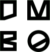

Inno
{Hacks}
Location:
Duale Hochschule Baden-Württemberg Karlsruhe
"Disrupt the tech industry with your innovative ideas"
- Inno{Hacks} is one of the biggest hackathons in Southern Germany with more than 100 participants competing in the categories Technology Innovation, UX Innovation and Social Innovation.
open_in_new
MPC
Hackathon
Location:
c-base, Berlin
"How can we enable more natural interactions with technology?"
- This is your opportunity to design the future of human computer interaction using the latest technology! Work together with other creative minds and build cool innovative apps that challenge and inspire.
open_in_new
Digital Journalism
Hackathon
Location:
WERK1, Munich
"How can we innovate digital journalism? Not only improve it but create it from scratch?"
- Spend one weekend thinking outside the box and find new ways of storytelling and new tools. Become part of a team of journalists, designers and developers and develop a prototype. Your goal: Create a new kind of journalism that is purely digital and goes beyond improving the present but radically pushes forward into the future.
open_in_new
 Design support by D M B O - Studio für Gestaltung
www.dmbo.de
Impressum
Events made with
favorite
by
Hackerstolz
,
Microsoft
&
Media Lab Bayern